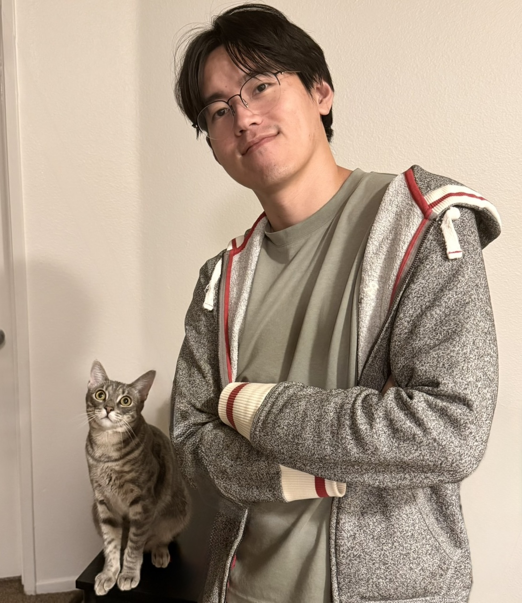
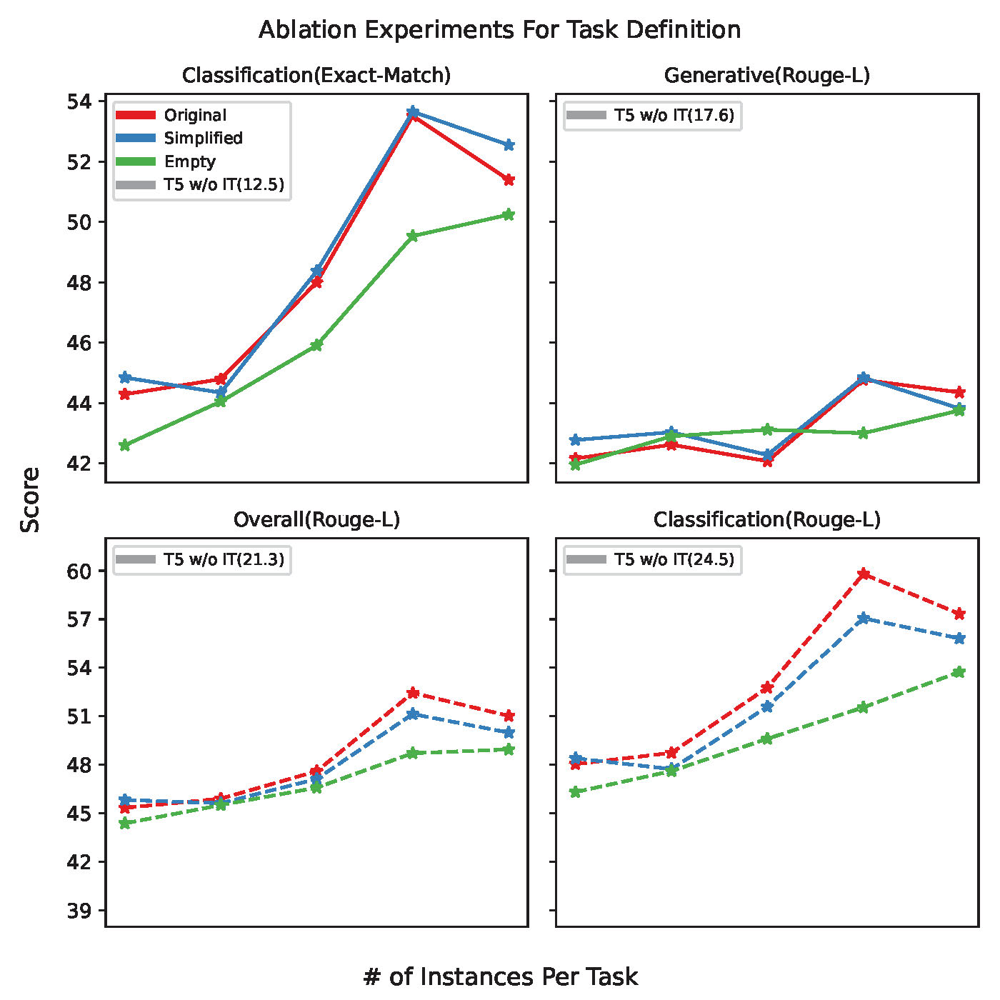
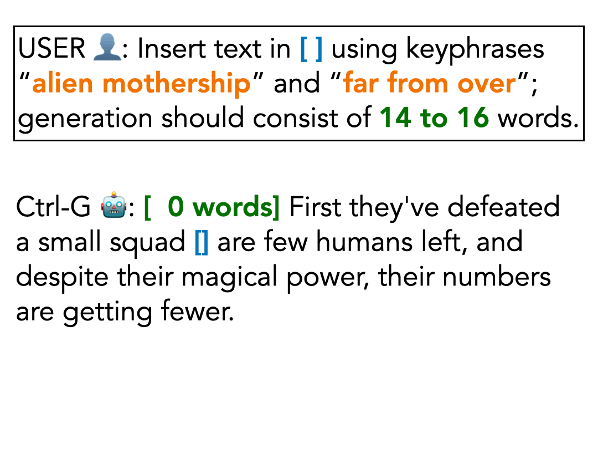
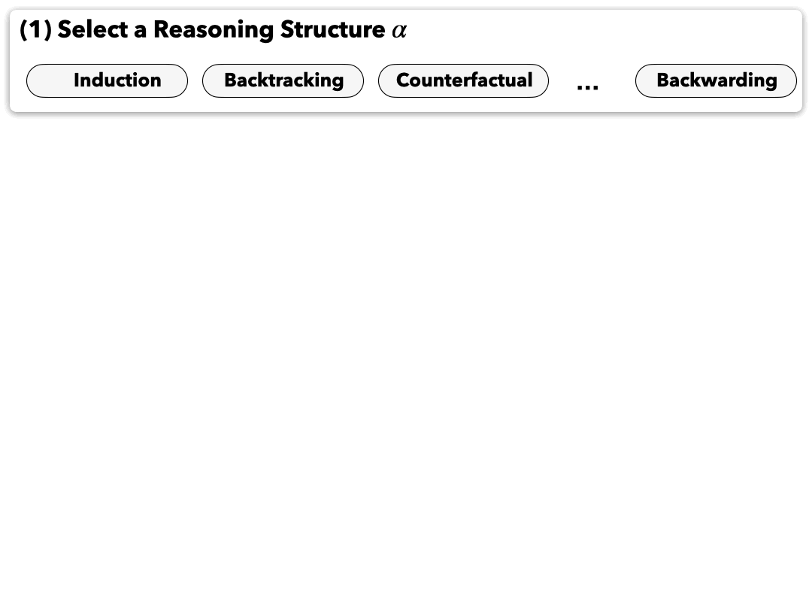
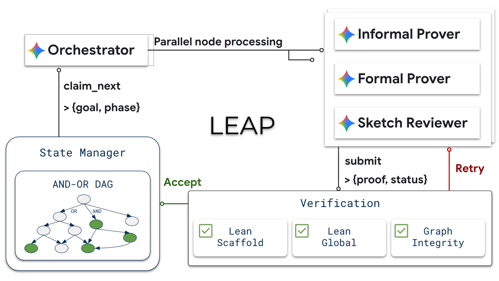

Ph.D. candidate in Computer Science at UCLA, advised by Nanyun (Violet) Peng. Graduating 2027.
I work on reliable control over AI: making a language model do what it was actually asked to do — and being able to show that it did.
Reliable Control over AI
Four stages, in the order the problem forced on me: diagnose where control fails, enforce structure at inference time, shape reasoning during training, and extend reliable control to long-horizon problems through verifiable memory.
In 2023, instruction-tuned models led every benchmark. Their scores concealed a simpler explanation: the model had learned the shape of an answer, not the task behind it. Swapping an instruction for a misleading one barely moved performance. The gap widened when a model had to follow an unfamiliar definition instead of leaning on familiar correlations, and it returned a level up when one model was asked to review another’s work.
ACL 2023 Do Models Really Learn to Follow Instructions? An Empirical Study of Instruction Tuning

In 2024, prompting could steer a model but never bind it, and complex constraints still slipped through. Ctrl-G distills the base model into a hidden Markov model and composes it with an automaton encoding the specification, so every output satisfies it by construction. A 7B model satisfied 79% of constraints where GPT-4, then state of the art, managed 24% — and the same machinery shapes not only what a model produces, but how it reasons.
NeurIPS 2024 Adaptable Logical Control for Large Language Models (Ctrl-G)

In 2025, reinforcement learning could sharpen reasoning, but only across the trajectories a model happened to explore — coverage, not capability, was the bottleneck. Ctrl-R carries tractable trajectory control from inference into learning, steering exploration toward backtracking, induction, and counterfactual reasoning, with importance correction during optimization. The model learns which structures pay off instead of imitating one chain of thought.
ICML 2026 Spotlight Learning Structured Reasoning via Tractable Trajectory Control

By 2026, scaling control past a single trajectory had become a memory problem. A model reasons inside a short context and draws on parametric knowledge, but nothing reliable sits between them. LEAP adds that layer: a verified DAG holding the decomposition, its dependencies, and the current frontier, so an agent can reuse solved subproblems, backtrack from failure, and try alternatives without ever losing the global picture.
Preprint LEAP: Supercharging LLMs for Formal Mathematics with Agentic Frameworks

Education & research
Service & teaching